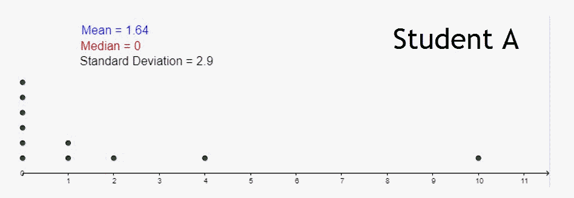
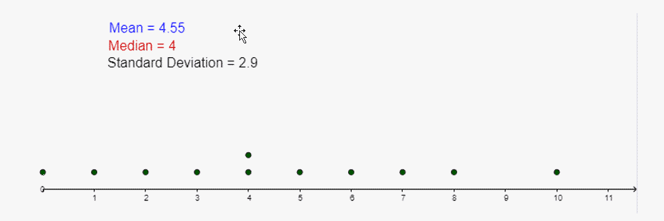
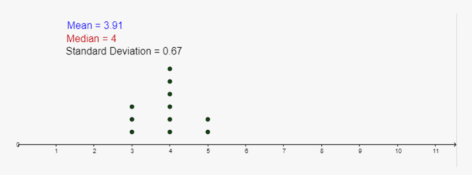
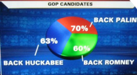

Unit 1 Describing Data
2.2 More Graphs and Displays
Dot Plots
- An instructor assigns MATH 1530 students in the class to poll 11 randomly selected people on campus with the following question: “On average, how many hours per day do you spend playing video games?” Analyze the responses.   
- Pictograph:
- Using 3-dimensional representations distort sizes.
- Graph may be drawn to the correct height, but the brain perceives area.
![A picture of three separate graphs depicting some unknown characteristic, A and B. On each graph, the horizontal axis represents each characteristics A and B. The vertical axis represents the number of people possessing each characteristic and is labeled from 0 to 3, counting by 1. Since each graph is a pictograph, an image of a person represents the number of people with Characteristic A or B. The first graph is titled Improper Scaling. In this graph, image A reaches the number 1 and is very small in width. Image B reaches the 3 and is very large in width. The second graph is titled Regular. In this graph, Image A reaches the number 1. Image B is depicted as the same size as image A, but there are three of them stacked on top of each other and they reach the number 3. The third graph is titled Comparison. In this graph, the improper scaling example is used again with only the small images. Image A reaches the number 1 and is very small in width. Image B reaches the number three and is very wide. It takes 9 of the small image from A to fill the area taken up by the large image for B. This is misleading in that it indicates that B is 9 times larger than A instead of 3 times larger than A.](images/u1s5mg1.png)
- Bar graphs/Line graphs:
- Check for y-axis starting at 0. Otherwise differences are exaggerated.
- Check that y-axis has a consistent and appropriate scale.
- Check that there is not a “break” in the y-axis.
![A bar graph depicting the percentage of trucks sold over the last ten years that are still on the road. The horizontal axis represents each of the 4 trucks: Chevy, Ford, Toyota and Nissan/Datsun. The vertical axis represents the percentage and ranges from 95-100, counting by 1. The Chevy Bar is at 98.5%, the Ford bar is at 97.5%, the Toyota bar is at 96.5% and the Nissan/Datsun bar is at 95.5%. This is what is written below the graph in large bold lettering. More than 98% of all Chevy trucks sold in te last 10 years are still on the road. In much cmaller bold lettering is, 'Over the years, no other truck is that dependable, foreign or domestic.' In even smaller lettering is, 'Best full-size pickup in initial quality.' Additionally, 'Best truck line overall in sales satisfaction.'Both of these quotes are credited to J.D. Power and Associates. Also stated is, No deductible, 3-year/36,000-mile Bumper to Bumper Plus Warranty.' In larger bold lettering below the three quotes is Chevrolet. The Most Dependable, Longest-Lasting Trucks. And finally, in extremely large and bold lettering is LIKE A ROCK. In order to accurately represent the data, the vertical axis should be numbered from 1 to 100.](images/u1s5mg2.png)
- Pie Chart:
- 3-dimensional representations distort areas.
- Used only when there are parts of a whole. (Must add to 100%)
![A picture of two three dimensional pie charts. The first one is labeled, Misleading Pie Chart. Item D represents 42% of the pie, Item B represents 42% of the pie, Item A represents 11% and Item C represents 5%. A note at the bottom of the graph says, 'In the misleading pie chart, Item C appears to be at least as large as Item A, whereas in actuality, it is less than half as large.' The second pie chart is labeled as the Regular Pie Chart. It is a one dimensional chart representing Items A-D with the same percentages as in the misleading pie chart. However, in this chart, Item C looks like it is only 5% of the pie and Item A looks like it is 11% of the pie.](images/u1s5mg3.png)

- Other:
- Going against conventions
- Cherry picking data
- Using the wrong graph
![A pictogram titled Summer Olympic Medal Count (Up to August 2004). The left column is the country and the right column is the medal count. Number 1 is the U.S.A. There are 6 medals drawn and the count is 1,975. The second country is Russia. There are 5 medals drawn and the count is 999. The third country is Britain. There are 4 medals drawn and the count is 615. The fourth country is France. There are 3 medals drawn and the count is 523. The fifth country is Germany. There are 2 medals drawn and the count is 499. A note at the bottom of the graph says, 'This medal count was based on the records of Agence France-Press news service and may vary from other accounts. Initially, the International Olympic Committee frowned upon national medal counts and early reports are incomplete. In fact, from 1896 to 1906, athletes registered as individuals and it was not uncommon for them to play on the teams of other countries.'](images/u1s5mg5.png)
![A bar graph titled Top selling Girl Scout cookies nationally. Each bar has a picture of the cookie being represented and all bars are a different color. Each bar represents the percentage of the specific cookie sold out of the total cookies sold. The Thin Mints is 25%, the Samoas/Caramel deLites is 19%, the Tagalongs is 13%, the Do-Si-Dos/Peanut Butter Sandwiches is 11%, the Trefoil/Shortbread is 9% and Other varieties is 23%. The length of the bars from shortest to longest is Thin Mints, Other varieties, Trefoil, Samoas, Tagalongs and Do-Si-Dos.](images/u1s5mg6.png)